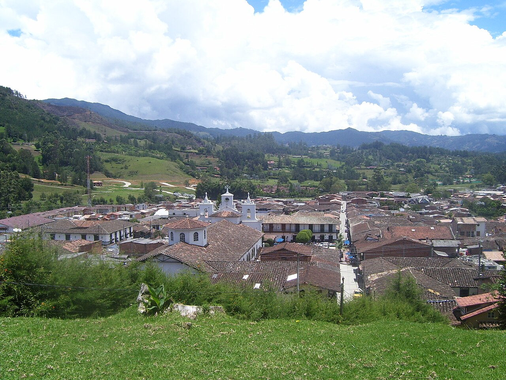
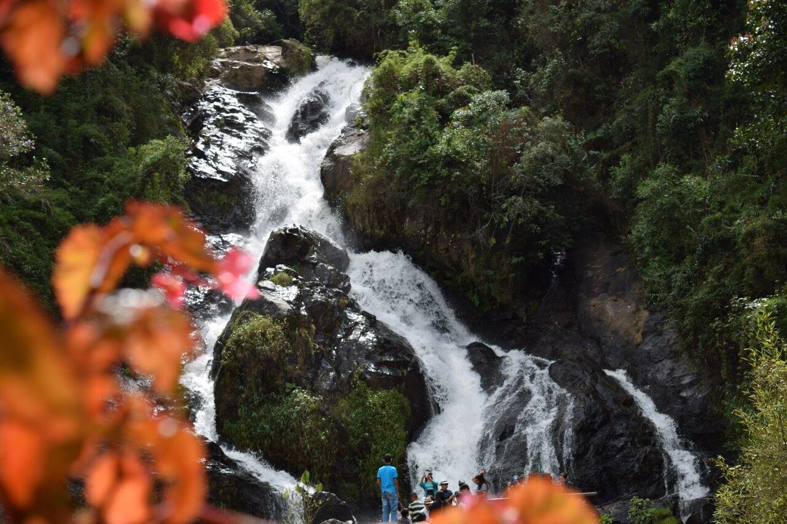
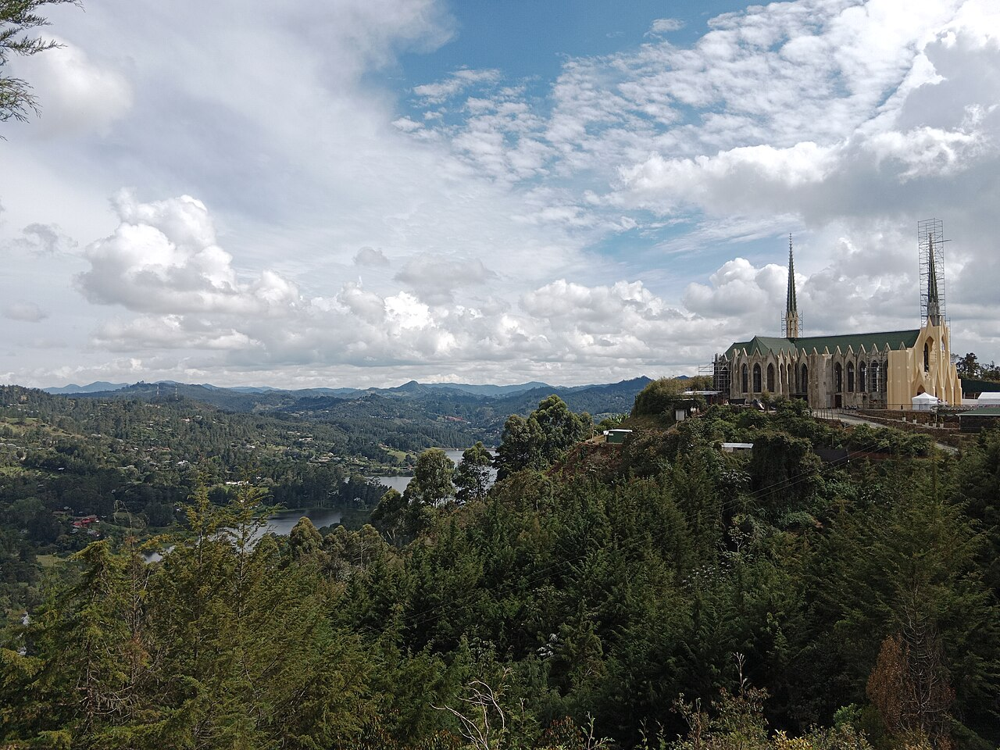

Parque principal
Camina entre arquitectura tradicional y espacios de encuentro.
Ubicar en el mapa ↗Oriente · Antioquia, Colombia
Calles tradicionales, trabajo en madera y naturaleza en el Oriente.
Qué conocer ↗Conocer su historia ↓
¿Tienes un negocio en El Retiro? Déjanos tus datos para participar ↗
Conoce el destino
La memoria de El Retiro está vinculada a Javiera Londoño y a la libertad de personas esclavizadas. Esa historia convive con sus oficios artesanales y la vida alrededor del parque.

Ideas para tu visita
Elige los lugares que despiertan tu curiosidad y organiza tu recorrido a tu ritmo.
Camina entre arquitectura tradicional y espacios de encuentro.
Ubicar en el mapa ↗Una cascada del entorno rural; consulta las condiciones de acceso.
Ubicar en el mapa ↗
03Conoce los caminos y oficios del municipio con orientación local.
Ubicar en el mapa ↗Imágenes redimensionadas; el encuadre puede variar según la pantalla. Las fotografías con licencia CC BY-SA conservan esa licencia.
Conecta las partes de tu viaje
Encuentra cómo moverte, dónde quedarte y comer, qué hacer y los servicios que necesitas. Explora a tu ritmo.
Aún no hay lugares publicados en este directorio.
Ubica los lugares que quieres conocer y consulta con cada sitio sus horarios, condiciones de ingreso y accesibilidad antes de organizar tu recorrido.
Ubicar El Retiro en el mapa ↗No hay próximos eventos publicados.
¿Organizas un evento? Hablemos ↗Haz parte de Explorando Lugares
No te quedes por fuera.
Si tienes un hotel, restaurante, bar o tienda, ofreces transporte u organizas recorridos y actividades, queremos conocer tu negocio.
Déjanos tus datos. Te contactaremos para conversar sobre cómo incluir tu negocio en el portal.
Quiero participar ↗